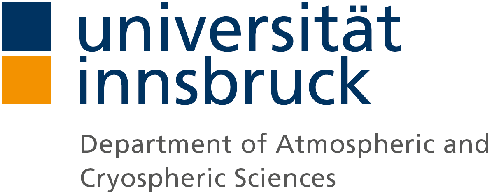

Open Science
Open Access publishing, Open Licenses,
Open Data, Open Source

Seminar on Research Ethics and Best Practice in Geo and Atmospheric Sciences, 05.05.2020
Fabien Maussion
Department of Atmospheric and Cryospheric Sciences (ACINN)
University of Innsbruck
Agenda
- Open Access Publishing & Publishing Business
- Licenses
- Open Data
- Open Source / Open Methodology
Publishing open access
- There is no single valid argument for closed access publications
(other than publisher profit) - Most journals do/will offer open access options (Plan S). Yes, even Nature from 2021 onwards.
- Problem: the hybrid "double dipping" model remains (Coalition S only covers 7% of published papers worldwide).
- For us researchers: still difficult to decide what to do.
“The FWF requires and supports all project leaders and project staff members to make their peer-reviewed publications freely available through the Internet, if they result in full or in part from projects funded by the FWF.”
SourceOpen access models
- Gold Open Access: free + open access license
(see license discussions below) - Hybrid Open Access
- Green Open Access (EarthArXiv)
Breakout session 1
Q1: (if experience with papers already): what issues did you encounter with the FWF open access policy (e.g. difficulty to find a suitable journal, etc.)?
Q2: Plan-S is motivated by good intentions (full OA and the end of the hybrid model). What do you think are the obstacles towards its implementation, i.e. why did some agencies decide not to sign it?
“The current strategy on open access at the DFG puts great emphasis on the role of the research community in shaping the open access transformation. As an institution based on the self-governing of science and research, it surmises that open access mandates can lead to increased article processing charges (APC), an effect that the DFG strives to minimise. Moreover, instituting such mandates would involve fundamental changes to the system by which reputation is created and research success is rewarded away from indicators such as journal impact factors.”
Source
- If possible, prefer OA option in all cases (FWF will pay only part of it)
- Try to avoid industry publishers with hybrid models (Elsevier, Springer Nature...) and prefer academic societies publishers (EGU, AGU, AMS, etc.).
- Nature and Science alike are still a big asset for your career - putting principles first in this case is laudable, but can put your career at risk.
- Use Green open access model if everything else fails.
Further reading
Licenses & Copyright
- Protect your work, data, and intellectual property.
- Put conditions on how people can use your work.
- Sometimes: give the rights your work to third parties (e.g. publishers).
Golden rule: always share any work (data, image, webpage, code...) with a license
Types of Licenses

People have to ask you before they can use your work in any way.

Anybody can use your work at wish.

Anybody can use your work, but all copies and derivatives must retain a statement acknowledging the original author of the work (you), and cannot do it in a way that suggests that you endorse this particular use.

Anybody reuse your work, but only for noncommercial activities.
The challenge is to define what "noncommercial" means.

Anybody reuse your work, mix and remix it, but they can only share it under the same license (or compatible). Also called "copyleft" license.

Anybody reuse your work, but not remix or change it (unless they keep the modification for themselves).
Breakout session 2
Case 1: you upload a presentation to a conference website. Which situations are prevented/allowed by the use of (a) an "All Rights Reserved" license and (b) a CC-BY license:
- Bob cites your presentation in their paper (as a "grey literature" citation)
- John uses a graph from your slides in their paper and claim it's their work
- A statement you made is taken out of context and suggests you are denying that climate change is real
- Jane uses your graph in a textbook, translates it and changes the color of the curve. The legend states: "Adapted from YOUR NAME".
- Paul finds your idea awesome and publish a very similar idea, and claim that they are "the first ones to have that idea".
Case 2: you share a .csv file on your website of this very important stuff you measured. Which situations are prevented/allowed by the use of (a) a CC-BY license, (b) a CC-BY-NC and (c) CC-BY-SA:
- Donald develops an algorithm to clean your data, and sells the cleaned data to your rival (but says that the data originates from you)
- Jill develops an algorithm to clean your data, puts the cleaned data online, and says that anyone can use it under the condition to cite you and Jill.
- Jack reverse the curve and suggests that your data shows that climate change is real
- Zoe uses your data to compare their data to it. They forget to cite you.
- Elon uses your data to develop a new theory. They patent their new theory and make a lot of money. They cite you, but you can't access the theory derived from your data since it's patented and for sale.
An open license resource for almost all use cases
(not software):
Software licenses
- Permissive: MIT, BSD, Apache
- Copyleft: GPL
Open Data / Open Methodology
Science relies on
- peer review
- skepticism
- transparency
- attribution
- accountability
- collaboration
- impact
Since always, academic science has been perfecting these tenents.
A common misconception
“If I share my data or code,
people will steal my results and I will be left with nothing.”
Publishing First
- Good: share code/data once all papers have been published
- Better: share code/data as soon as there is a pre-print
- Best: share, with a license, while working, if not sooner
Data and the cake

Reproducible science
Thank you!